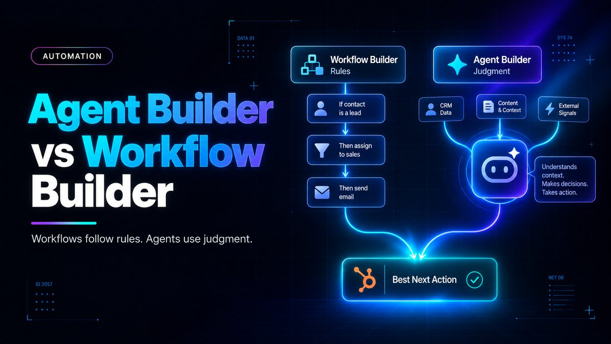

What Is the Main Difference Between HubSpot's Agent Builder and Workflow Builder?

Direct answer: HubSpot's Workflow Builder executes fixed if/then rules that never change, while Agent Builder, launched in public beta on July 23, 2026 alongside Agent Hub, creates AI agents that read CRM context, make judgment calls, and act, then hand off repeatable steps to workflows. Workflows handle predictable logic; agents handle interpretation. Startups can use both together.
- Workflows follow predefined rules; Agent Builder lets AI agents interpret CRM context and make judgment calls before handing structured steps to workflows.
- Agent Builder is deeply integrated with the CRM but does not require it, meaning triggers can fire from Google Sheets rows, webhooks, or third-party intent signals.
- Agent Hub is the single console that unifies every deployed agent under four goals: building demand, winning deals, delighting customers, and scaling growth.
- Workflow-based automation stays free inside your subscription, while custom agents bill per outcome through HubSpot Credits, so you pay only when the agent actually does work.
- Approval steps let founders require human sign-off on agent actions at first, then loosen guardrails once the agent proves reliable.
Questions this article answers
- Why did HubSpot build Agent Hub and Agent Builder?
- What does Agent Hub actually do?
- What makes Agent Builder different from classic workflows?
- How do you decide between using a workflow or an agent?
- How has the builder interface itself changed?
- What guardrails keep agent autonomy under control?
- How does pricing differ between workflows and custom agents?
- Is there a real example of Agent Builder saving time?
- What should a startup founder do first with these tools?
- Plus 6 FAQs answered below
Why did HubSpot build Agent Hub and Agent Builder?
HubSpot built these tools because most go-to-market teams run AI agents that operate in silos, with no shared visibility into what each agent is doing or producing.
Most go-to-market teams running AI agents today share the same problem: the agents are scattered and disconnected. A sales team's prospecting agent might reach out to a customer the same week a service agent is handling that account's open complaint, with neither agent aware of the other. When leadership asks what the AI investment is producing, there is often no clean answer, according to Enterprise DNA.
For a startup with two or three people wearing five hats each, this isn't a hypothetical edge case. It's what happens every week when nobody has time to manually check whether marketing, sales, and support tools share the same picture of the customer.
What does Agent Hub actually do?
Agent Hub is a single console that brings every HubSpot agent's live status, results, and performance into one screen, organized around four go-to-market goals.
Agent Hub brings every HubSpot agent into a single console with live status, recent results, and outcome-based organization mapped to four go-to-market goals: building demand, winning deals, delighting customers, and scaling growth, per CMSWire.
Rather than each agent operating in its own silo, Agent Hub forces agents to share context from HubSpot's Smart CRM, so coordination happens at the data layer instead of relying on manual handoffs between teams. Agent Hub also lets users identify agents that haven't yet been activated and turn them on, according to Uptech Media.
What makes Agent Builder different from classic workflows?
Agent Builder is a no-code canvas where you describe an agent's job in plain language, and it connects to CRM data, workflows, and human escalation points, without requiring the CRM as a dependency.
Agent Builder is where the real difference from classic HubSpot Workflows is sharpest. Users describe what they want an agent to do in plain language, and the system draws on existing CRM data to configure the agent, connect it to workflows, and define when it should escalate to a human, per HubSpot's own announcement.
HubSpot's co-founder framed the structural shift directly: "HubSpot Workflows was tightly coupled with the CRM (because it was originally built to automate things involving CRM data). Agent Builder is deeply integrated to the CRM, but does not require it. Agent Builder helps you automate pretty much anything in GTM inside or outside the HubSpot CRM," as noted in his post on X.
That means triggers can fire based on things outside the CRM entirely, including a row added to a Google Sheet, an intent signal, or a webhook call. For a lean startup already stitching together spreadsheets, Slack, and point tools, that flexibility matters more than any single feature.
How do you decide between using a workflow or an agent?
Use a workflow when the trigger and action are already known and predictable; use an agent when the task requires interpretation, such as reviewing a sales call and recommending a next step.
The clearest way to separate the two tools is by what kind of problem they solve. Workflow automation follows predefined rules, while agentic AI sets goals, reasons through multi-step tasks, adapts to feedback, and acts using CRM context, according to Fast Slow Motion.
A workflow is deterministic: if a contact fills out a demo form, assign to a sales rep; if a deal stage changes, send an internal notification. An agent is built for the opposite kind of task, where the path isn't known in advance, such as reviewing the latest sales call, identifying the main concern, and recommending the best next step.
Crucially, HubSpot doesn't force founders to choose one or the other. In many cases they work together: an agent interprets the situation, and a workflow handles the structured action that follows.
How has the builder interface itself changed?
HubSpot rebuilt the workflow experience into a canvas-based, agent-native interface where you drag blocks, talk to an assistant instead of clicking through menus, and drop agents directly into the flow.
For teams with limited engineering or ops bandwidth, the interface change matters almost as much as the underlying logic. HubSpot rebuilt the workflow experience into a canvas-based interface inside what it originally called Breeze Studio, per Sidekick Strategies.
The new builder works like the Marketing Studio canvas, with a big open grid where you drop trigger, action, branch, agent, and delay blocks wherever you want them, according to Vantage Point. Inside Agent Builder specifically, you're not switching between a workflow tool and a separate AI tool; triggers, actions, and agent hand-offs connect in one place.
What guardrails keep agent autonomy under control?
Agent Builder includes approval steps requiring human sign-off before you trust an agent fully, and triggers now go beyond form submissions to include scheduled times, property changes, webhooks, and third-party integrations.
A legitimate fear for any small team is handing decision-making to software with no visibility into what it's doing. Agent Builder includes approval steps, so you can require a person to sign off on each action while building trust in what the agent does, then loosen the reins once you're comfortable it behaves as expected, per NBH.
Triggers are also broader than the old form-submission-only model: an agent can kick off from a scheduled time, a contact property changing, a webhook, or a third-party integration.
How does pricing differ between workflows and custom agents?
Automations built inside Agent Builder that are rule-based don't consume HubSpot Credits and stay included in your subscription, while custom agents bill per completed action through usage-based HubSpot Credits.
The cost structure reinforces the rules-versus-judgment split. Automations and workflows built inside Agent Builder don't consume HubSpot Credits; if what you're building is fundamentally rule-based, trigger, action, done, that's included in your subscription the same way workflows always have been, according to Resolve247.
Custom agents consume HubSpot Credits when they complete a configured action, and this is usage-based, not a flat fee. HubSpot's named agents illustrate the model: agents bill per outcome, about 50 cents per resolved conversation, one dollar per recommended lead, ten cents per data answer, and extra credits run $10 per 1,000, per NBH.
This structure is genuinely favorable for cash-constrained startups because you pay when it works, not when it tries.
Is there a real example of Agent Builder saving time?
Yes, Ignite Reading built a custom agent that parses school district calendars in seconds instead of minutes and expects to reclaim roughly 350 hours per year.
HubSpot's own example makes the value concrete for a resource-strapped organization. HubSpot highlights Ignite Reading, which built a custom agent that parses school district calendars in seconds instead of minutes and expects to reclaim roughly 350 hours per year, according to HubSpot's announcement.
That is a small, nonprofit-style operation getting back the equivalent of nearly two months of full-time work annually, using a no-code agent rather than a custom engineering build.
What should a startup founder do first with these tools?
Audit your GTM stack into rule-based decisions and judgment-based decisions, move the rule-based ones into the free workflow canvas, and pilot Agent Builder on one high-friction judgment task with approval guardrails.
Startup founders should audit their current GTM stack in two buckets: decisions that are truly rule-based (lead routing on form fill, task creation on deal-stage change, survey sends on ticket close) and decisions that require judgment (lead qualification nuance, account research, sentiment-based prioritization).
Move the first bucket into HubSpot's no-cost workflow automation inside the new canvas, then pilot Agent Builder, starting with approval-required guardrails, on a single high-friction judgment task such as inbound lead qualification. Measure hours reclaimed and credit spend for 30 days before scaling further.
Frequently asked questions
What is the main difference between HubSpot Agent Builder and Workflow Builder?
Workflow Builder executes fixed if/then rules that never change regardless of context, while Agent Builder creates AI agents that read CRM context, exercise judgment, act, and hand off structured, repeatable steps to workflows when a rule-based process is all that's needed.
When did HubSpot launch Agent Hub and Agent Builder?
Agent Hub and Agent Builder launched in public beta on July 23, 2026.
Does Agent Builder require the HubSpot CRM to work?
No, Agent Builder is deeply integrated with the CRM but does not require it, meaning it can automate GTM tasks inside or outside the HubSpot CRM using triggers like Google Sheets rows, webhooks, or third-party intent signals.
How much do custom agents cost in HubSpot?
Custom agents bill usage-based through HubSpot Credits when they complete a configured action, for example about 50 cents per resolved conversation, one dollar per recommended lead, and ten cents per data answer, with extra credits at $10 per 1,000.
Do rule-based workflows cost anything under the new system?
No, automations and workflows built inside Agent Builder that are fundamentally rule-based don't consume HubSpot Credits and remain included in your existing subscription.
Can workflows and agents be used together in HubSpot?
Yes, HubSpot doesn't force a choice between the two; an agent can interpret a situation and then hand off the structured, repeatable action to a workflow, combining judgment and rule-based execution in one build.
Sources
- Enterprise DNA
- CMSWire
- MarTech Notes
- HubSpot Company News
- Vantage Point
- Uptech Media
- OneMetric
- HubSpot AI Agents
- Dharmesh Shah on X
- Fast Slow Motion (Agentic AI vs Workflow)
- Concept Ltd
- NBH: Agent Hub and Agent Builder
- Sidekick Strategies Blog
- Resolve247
- Fast Slow Motion (Agent Hub cost)
- Usage Pricing
- HubJoy
- NBH: What Agents Cost
- Hubo Experts
- The Marketing Blog UK
- IV Lead
- MarTech
- Sidekick Strategies Podcast
- Vantage Point (2026 Redesign)
- Use Carly
Want to know which of your GTM tasks should be a workflow, and which should be an agent?
Contact →